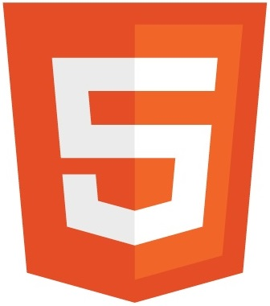
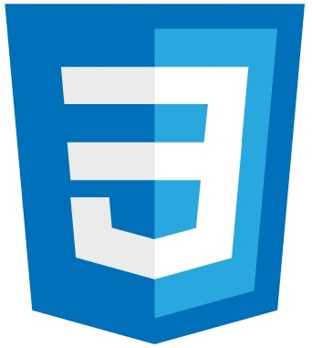
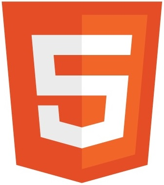
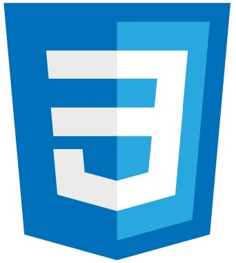

Illustrator
Adobe Illustrator ist ein professionelles Grafik- und Zeichenprogramm. Es ist sehr beliebt für seine Vektordatein.
Mit dieser Funktion ist es besser
Illustrator kommt wie Photoshop auch sehr oft bei Mediendesignern vor. Aber auch bei Webdesignern ist Illustrator weit verbreitet. Es bietet einem einfach Möglichkeiten, die kein anderes Programm anbieten kann.
Ich zum Beispiel nutze es um verschiedene Logos zu gestalten. Diese Logos verwende ich dann für Websites oder eigene Zeichenprojekte.
InDesign
Adobe InDesign ist ein Layout- und Satzprogramm. Es dient dazu Poster, Visitenkarten oder aber auch hochwertige Buchcover zu gestalten.
InDesign wird größtenteils von Werbeagenturen, Grafikdesignern und Verlagen genutzt.
Ich persönliche nutze InDesign aber auch um Flyers zu erstellen. Klar gibt es auch andere Produkte wie zum Beispiel Microsoft Publisher. Aber meiner Meinung nach hat Adobe hier die Nase vorne, was den Funktionsumfang angeht.
Photoshop
Adobe Photoshop ist das bekannteste Programm aus der Creativ Cloud von Adobe. Es ist ein sehr umfangreiches Tool, mit dem Bilder auf verschiedenste Weise professionell bearbeitet werden können. Nicht umsonst ist Photoshop bei Fotografen und Mediendesignern am meisten verbreitet, da es kaum ein Programm gibt, das einen so großen Umfang besitzt und dann auch noch gut bedienbar ist.
XD
Adobe XD dient dazu, Prototypen von Websites zu bauen. Das hilft um auf die Benutzererfahrung besser eingehen zu können. So können dann mit wenig Aufwand Webapps erstellt und freigegeben werden, die andere dann testen können. Das hat den Vorteil, dass man sich zeitgleich um andere Dinge kümmern kann.
In Zusammenarbeit mit Lars Obist haben wir ein Prototyp für unsere Firma "eatabroat". Diese wird auch bald online gestellt.
Java
Java kann man im Großen und Ganzen als zwei Dinge definieren. Einmal als objektorientierte Programmiersprache und einmal als Laufzeitumgebungen für Programme um sie ausführen zu können.
Ich zum Beispiel habe mit meinen Kommilitonen Lars Obist und Yuliya Litvin einen elektronischen Onlineshop gebaut. Hier kam dann Java als Programmiersprache zum Einsatz.
hier zum eShop
Github
Github dient als Filehostingdienst. So werden Software Entwicklungsprojekte zum gemeinsamen Bearbeiten auf den Servern zur Verfügung gestellt.
Ich nutze Github genau aus diesem Grund. Für das Filehosting. Es ist sehr praktisch, denn damit bearbeite ich einige Projekte dort und habe auch meinen eigenen Account um auf die Github-Dienste zugreifen zu können.
hier zu meinen Github
HTML
HTML bezeichnet die Hypertext Markup Language und ist eine Auszeichnungssprache, die dazu verwendet wird, HTML Dokumente zu erstellen. Diese Dokumente dienen als Grundlage für Internetbrowser um Websites darzustellen.
Wenn ein HTML Dokument sauber geschrieben ist, kann sie auf jedem Browser in jedem Betriebssystem dargestellt werden. Dabei ist es auch egal ob es sich um Desktopbetriebssysteme wie Windows oder Mac OS, oder aber um mobile Betriebssysteme wie Android oder iOS handelt. Der Grund dafür ist, dass HTML eine betriebssystemunabhängige Sprache ist.
Über die Jahre hat sich das Internet sehr weit verbreitet. Aufgrund dessen gibt es somit auch sehr viele Websites. HTML ist damit sogar das am meisten verbreitete Dateiformat der Welt.
CSS
CSS steht für Cascading Style Sheets und ist wie der Name schon sagt eine Stylesheet- bzw. Formatierungssprache. Zusammen mit HTML bildet sie quasi das Grundgerüst von Webseiten.
Zwar haben HTML und CSS gemeinsame Eigenschaften, wie zum Beispiel, dass sie betriebssystemunabhängig sind und weit verbreitet sind. Aber sie sind doch zwei verschiedene Sprachen.
So erstellt man mit einem HTML Dokument Inhalte einer Website. Mit einem CSS Dokument hingegen erstellt man keine Inhalte, sondern designt die schon vorhandenen Inhalte eines HTML Dokuments. So können Layouts mit den passenden Formatierungen erstellt werden, Abstände an Seiten eingehalten werden oder aber auch Texte ausgerichtet werden.
JavaScript
auch bekannt unter JS oder JScript

 


